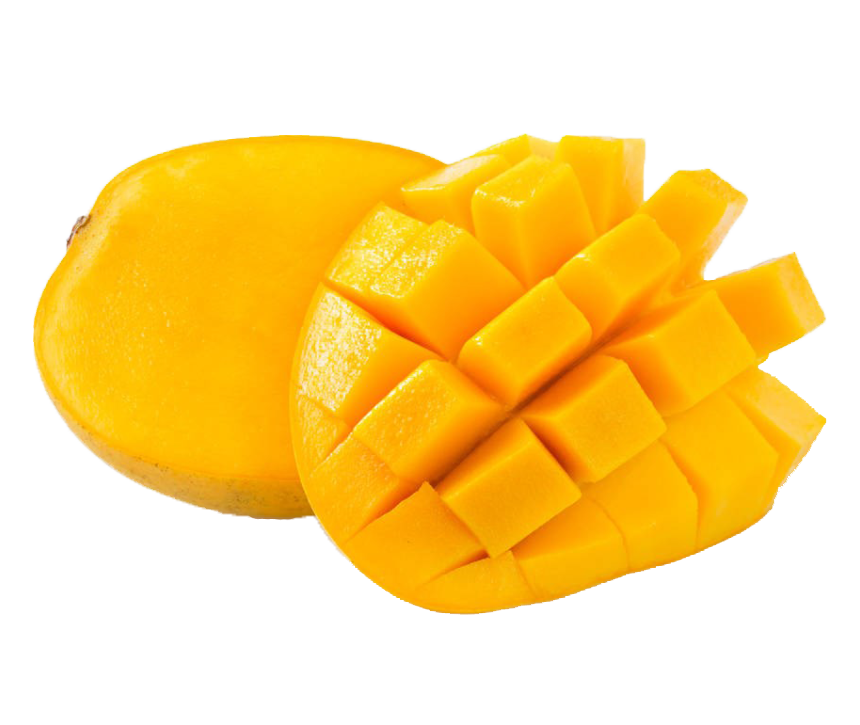

Result.
Mango is a personality to be reckoned with; quite often you are a person who has quite fixed ideas, and influencing you is no easy task. You tend to be an extremist with strong likes and dislikes; and at times even like to control a situation. You enjoy getting involved in something that presents mental challenge. Strong as you may be, you are like a kitten when you are with your partner. You accommodate the love of your life, and make up for all the strong will elsewhere!